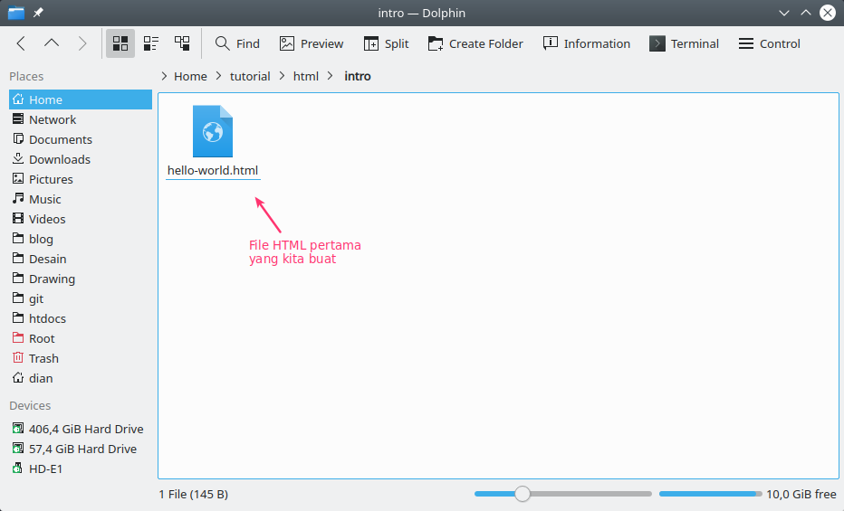
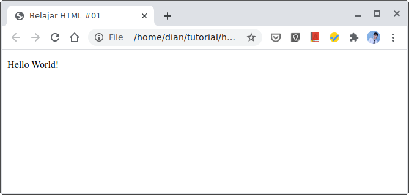

Pengenalan Dasar HTML untuk Pemula
HTML memang bahasa yang wajib dipelajari, bagi yang mau menjadi
web developer.
Karena…HTML merupakan bahasa dasar untuk membuat web.
Apa itu HTML?
Menurut Wikipedia :
HTML atau HyperText Markup Language merupakan sebuah bahasa markah
untuk membuat halaman web.
Jadi, HTML itu adalah sebuah bahasa yang
menggunakan markup atau penanda untuk membuat halaman web.
Penanda
atau markup ini, nanti akan kita sebut dengan Tag.
HTML berperan
untuk menentukan struktur konten dan tampilan dari sebuah web.
Kalau kita ibaratkan nih..

Dalam membuat halaman web, HTML tidak sendirian. Ada bahasa lain lagi yang menjadi pelengkapnya, yakni CSS dan Javascript. CSS adalah bahasa khusus yang digunakan untuk memperindah tampilan web. Lalu Javascript bertugas untuk membuat halaman web menjadi hidup. Karena dengan Javascript, kita dapat menentukan fungsi-fungsi maupun efek yang akan diterapkan di website.
Sejarah dan Asal-usul HTML
Cerita awal kemunculan HTML dimulai dari tahun 1980.. Saat itu seorang ilmuan bernama Tim Berners-Lee sedang bekerja di CERN.

CERN sendiri bukanlah perusahaan yang berkaitan tentang teknologi maupun internet. CERN adalah singkatan dari bahasa prancis: Conseil Européen pour la Recherche Nucléaire. Yang artinya: Komisi Eropa untuk Penelitian Fisika Nuklir.
Para peneliti di CERN membutuhkan sebuah cara atau sistem agar bisa saling berbagi dokumen hasil penelitian. Tim kemudian mencoba membuat ENQUIRE. Ini adalah software hypertext yang akan digunakan untuk berbagi dokumen. Lalu di tahun 1989, Tim memperkenalkan ide tentang hypertext berbasis internet. Ini nantinya akan menjadi cikal-bakal HTML.
Tim kemudian memulai proyek baru dengan rekannya Robert Cailliau
yang merupakan system engineer di CERN. Akan tetapi proyek ini
tidak resmi diadopsi oleh CERN. Pada akhir tahun 1991, Tim Berners-Lee
menerbitkan dokumen yang berjudul: “HTML Tags”.
Dokumen ini berisi
penjelasan tentang 18 tags awal yang menjadi konsep dasar HTML.
HTML sebenarnya dirancang berdasarkan pada konsep bahasa markup yang dikenal dengan SGML (Standard Generalized Markup Language). SGML adalah sebauah standar internasional untuk membuat dokumen dengan tanda (markup) seperti paragraf, list, heading, dan lain-lain.
Bisa dibilang..
HTML adalah implementasi dari SGML.
Kalau kita lihat, beberapa tag seperti <title> ,
<p>, <li>, dan
<h1> sampai <h6>
berasal dari SGML. Namun, tidak semua yang ada di HTML berasal dari
SGML.
Salah satunya adalah Hyperlink, yang murni hasil pemikiran Tim
Berners-Lee.
Ide tentang HTML ini kemudian disebarkan ke dalam
sebuah mailing list dan segera menjadi perhatian berbagai ilmuwan
komputer di seluruh dunia.
Perkembangan dan Versi HTML
HTML punya beberapa versi, dari versi yang paling tua hingga yang terbaru. Berikut ini perkembangan versi HTML:
- [Draft] HTML 1.0 (Juni 1993) adalah versi HTML pertama, namun tidak resmi dirilis;
- HTML 2.0 (24 November 1995) adalah versi HTML kedua yang resmi pertamakali beredar di pasaran dan dirilis oleh IETF;
- [Draft] HTML 3.0 (28 Maret 1995) versi ini gagal beredar, karena banyak perubahan yang memicu perdebatan;
- HTML 3.2 (14 Januari 1997) versi resmi yang dirilis W3C pertamakali.
- HTML 4.0 (24 April 1998) versi pengembangan dari yang seblumnya;
- HTML 4.01 (24 Desember 1999) versi perbaikan dari HTML 4.0;
- XHTML 1.0 (26 Januari 2000) pengembangan dari HTML 4.01 dengan mengadopsi XML;
- XHTML 2.0 (Augustus 2002—Juli 2006) versi kedua dari XHTML;
- HTML 5 (28 Oktober 2014) versi html saat ini.
Versi [draft] adalah versi yang tidak resmi dirilis ke pasaran. Bentuknya cuma masih dalam draft speksifikasi saja. Artinya tidak ada yang menggunakan versi [draft] untuk membuat web. Lalu, versi mana yang akan kita pakai? Tentunya versi terbaru, yakni HTML 5.
Peralatan untuk Belajar HTML
- Teks Editor untuk Menulis HTML
- Web Browser untuk Membuka HTML
Teks editor akan kita gunakan untuk menulis kode-kode HTML. Kamu bebas menggunakan teks editor apapun. Notepad boleh, Notepad++ juga boleh. Apapun teks editornya, yang penting bisa digunakan untuk membuat dan menulis dokumen HTML.

Web browser akan kita gunakan untuk membuka HTML. Kamu juga
bebas menggunakan web browser apapun.
Saran saya sih.. gunakan web
browser yang terbaru, karena kita juga akan menggunakan HTML versi
yang terbaru.
Firefox atau Google Chrome, saya kira sudah cukup
Membuat Dokumen HTML Pertamamu!
Kini tiba saatnya, kamu harus mencoba sendiri membuat dokumen HTML.
Caranya sangat mudah.
Mari kita mulai dengan membuat hello world
pada teks editor.
Setelah itu, simpan dengan nama hello-world.html.
Sekarang cobalah buka file hello-world.html dengan web browser.. maka hasilnya:

Selamat! 🎉
Kita sudah berhasil membuat halaman web pertama dengan HTML.
Nama File untuk HTML
Ada beberapa hal yang perlu diperhatikan dalam membuat nama file HTML:
- Extensi file HTML
- Nama Khusus untuk Homepage
- Hindari Beberapa Hal ini..
Penggunaan Spasi
Jangan Alay!
- HeLLoWORLD.html
- da*#$.html
- Bagian Deklarasi
- Bagian HEAD
- Bagian BODY
- Bagian Deklarasi
- Bagian HEAD
- Tag meta untuk SEO;
- Tag
<title>untuk judul; - Tempat menulis kode CSS dan Javascript;
- dan lain-lain.
- Bagian BODY
Setiap file HTML harus berekstensi .html, .xhtml (untuk XHTML), dan .htm saja. Jika tidak menggunakan ekstensi ini, maka ia tidak akan bisa dibaca oleh web browser.
Contohnya seperti ini:
Nama filenya adalah hello-world.txt.
Sudah jelas, ini bukan file HTML, melainkan sebuah file teks biasa. Maka.. browser akan menampilkan isi file tersebut apa adanya.
Jika kamu ingin membuat halaman untuk homepage, maka sebaiknya gunakan nama index.html. Karena ia akan otomatis dibuka saat website dikunjungi.
Nama file HTML biasanya akan tercantum pada URL, maka
sebaiknya hindari menggunakan spasi pada nama file HTML, agar
URL yang dibentuk lebih bagus.
Spasi pada URL, biasanya
akan otomatis diubah menjadi %20.
Sebagai ganti spasi, kamu bisa gunakan tanda min (-) atau undescore ( _ ).
Berikanlah nama file HTML dengan file yang biasa, hindari menggunakan huruf besar, campuran dari huruf besar dan kecil, dan juga menggunakan simbol.
Contoh:
Meskipun nama ini bisa valid, tapi kurang bagus untuk dibaca.. baik oleh manusia, maupun mesin. gunakan saja bahasa yang formal.
Struktur Dasar HTML
Berikut ini adalah kode HTML yang baru saja kita buat:
Penulisan kode HTML* selalu dimulai dengan deklarasi DOCTYPE,
lalu menuliskan tag <html> dan di dalamnya terdapat
tag <head> dan <body>
Kalau kita perhatikan.. struktur dasar kode HTML terdiri dari tiga bagian penting:
Mari kita bahas satu-per-satu:
Coba perhatikan kode pada baris pertama:
<!DOCTYPE html>.
Ini adalah tag deklarasi untuk menyatakan tipe dokumen dan versinya. Pada contoh di atas, kita menyatakan dokumen ini bertipe HTML dan versinya adalah HTML 5.
Nah, untuk HTML versi 4.. beda lagi cara deklarasinya.
Contoh untuk HTML 4.01:
<!DOCTYPE HTML PUBLIC "-//W3C//DTD HTML 4.01 Transitional//EN" "http://www.w3.org/TR/html4/loose.dtd">
Cukup panjang bukan..
Lalu apakah boleh kita tidak menulis kode <!DOCTYPE html>
> ini?
boleh-boleh saja.. dokumen HTML-nya akan tetap
bisa dibuka di web browser. Tapi, ini tentunya akan melanggar
aturan standar yang dibuat W3C.
Berikutnya, di bawah tag deklarasi <!DOCTYPE html>
terdapat tag pembuka untuk HTML:
Tag <html> wajib ada di setiap dokumen HTML..
Nah di dalam tag
<html> ini, terdapat dua tag
penting lagi.. yakni: tag <head> dan tag
<body>.Setelah itu barulah terakhir tag HTML ditutup dengan
</html>.
Bagian HEAD adalah bagian kepala dari HTML. Dimulai dari tag
<head> dan ditutup dengan </head>

Pada bagian HEAD, biasanya digunakan untuk menuliskan tag-tag yang akan dibaca oleh mesin.
Seperti:
Bagian BODY adalah bagian yang akan ditampilkan pada web browser.
Penulisannya di mulai dari tag <body> dan ditutup
dengan </body>.
Di sinilah nanti kita akan banyak menuliskan konten dengan berbagai
macam tag. Saat ini kita baru mengisinya dengan tag <p>.
Tag <p> adalah tag yang digunakan untuk membuat paragraf.
Nah, sampai disini dulu tutorial html dasar untuk pemula semoga ilmu yang saya bagikan bisa berguna untuk kalian semua.
Kembali ke halaman utama